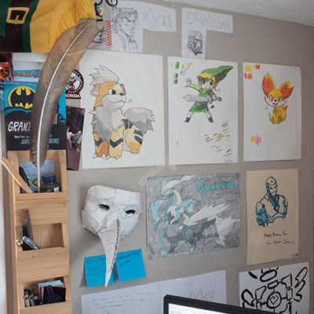

Logo
The wall next to my window behind my desk, mostly art from highschool. The mask is from my 2013 costume
Hi, I'm Aaron Hylands.
I have always been a creative individual, ranging anywhere from arts and crafts, to working with steel. I have been immersed with modifying the world around me since I was a child, taking anything apart that I could find to try and figure out how it works. One of the easiest ways to do this is virtually, or in Video Games.
My current Steam profile picture made using paint.net before I learned Illustrator. My previous profile picture that I changed from had been my profile picture since I made my account on Dec. 27, 2010.
I also go by Redbarony6
Chances are good that if you play a lot of videogames, then you have what is called a “gamertag” or alias. I choose to go by Redbarony6 or more recently just RedBaron. I’ve been playing video games for a long time, my Steam account is 9 years old itself. According to SteamDB, I have a total of 7,744 hours played cumulatively amongst my library of 328 games on Steam alone.
Before I decided to go out on walks to take pictures I took pictures of things in my house.
(Taken: February 1, 2020)
Videogames have been a large part of my life.
So I decided to sacrifice them, not only to be more productive, but to ensure that I succeed. I had always been interested in photography, and have been told that I have "an eye" for it. I eventually decided that I would start going out regularly in search of a specific perspective, one that I could capture with a camera.
The first picture posted on my journey.
(Taken: March 30, 2020 | 8:50am)
So on March 3, 2020 I went out in search of that perspective.
I decided that I would post a picture a day for as long as I can on my instagram aaron.hylands. The idea is to go out and take a lot of pictures, from those I pick my favourites, and from those I pick one per day to run through photoshop and post.